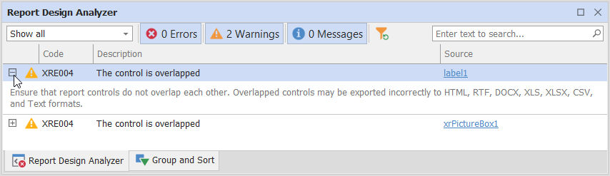
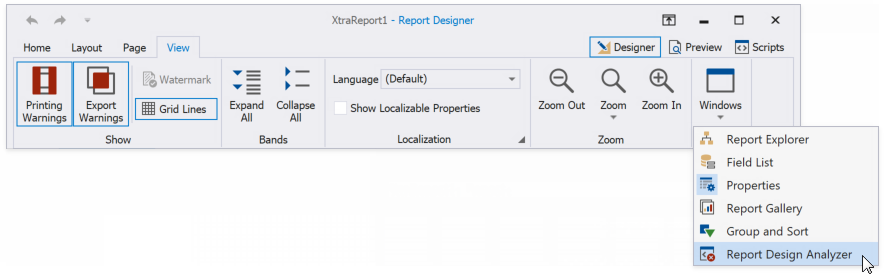
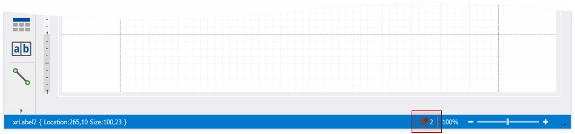
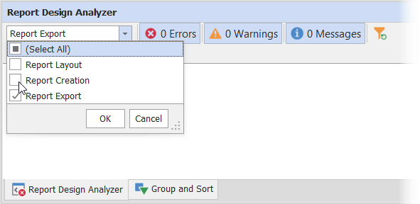
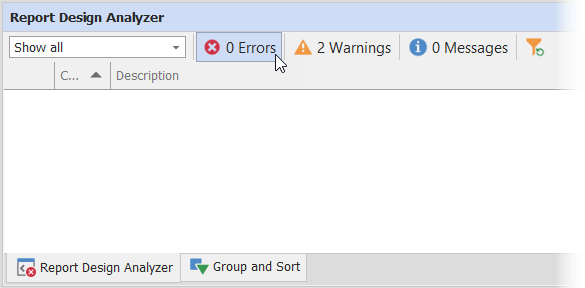

Report Design Analyzer
The Report Design Analyzer shows errors, warnings, and information messages that help you to detect and fix issues in a report.

Invoke the Report Design Analyzer
Do one of the following to invoke the Report Design Analyzer:
Select Report Design Analyzer from the Windows drop-down menu in the View toolbar tab.

Click the bell icon in the status bar.

Fix Issues
Each message contains a recommendation on how to fix an issue. Click the Plus icon in front of the message to expand the recommendation.

The Source column contains a reference to the control or script that caused the issue. Click the reference to navigate to this control or script.

Filter Messages by Source
Based on their source, report errors are divided into four groups:
- Report layout errors – occur, for example, when report controls overlap each other or extend beyond the report’s printable area.
- Report creation errors – occur while the report document is created. For instance, it might include notifications about invalid property values or unreachable sources of content.
- Report export errors – happen while the report document is exported to PDF, XLSX, and other formats.
- Report script errors (this group is not displayed if report scripts are disabled in your application) – for example, errors in script syntax.
You can disable messages that belong to a particular source:

Filter Messages by Type
You can enable/disable messages of each available type ("Error", "Warning", or "Information") or any combination of them. Click the panel in the UI as shown in the image below to enable/disable messages of a corresponding type.
